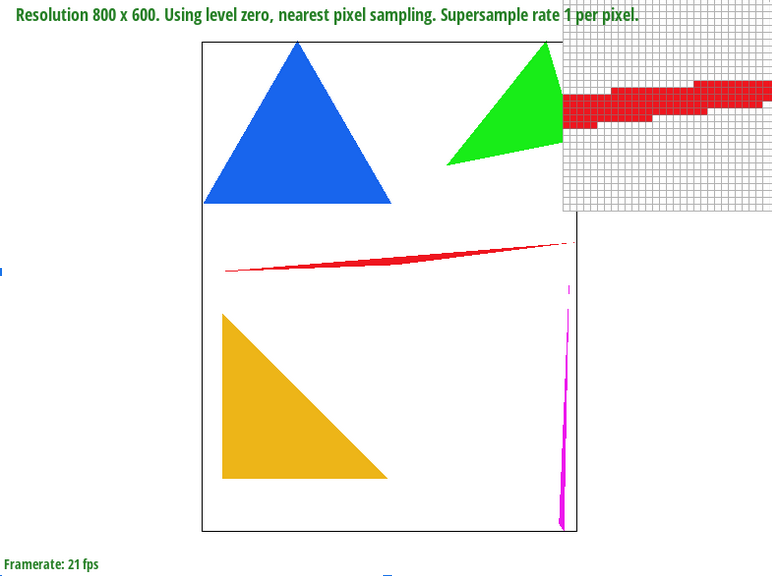

CS184/284A Spring 2025 Homework 1 Write-Up
Link to webpage: cal-cs184-student.github.io/hw-webpages-super-awesome-team/hw1/index.html
Link to GitHub repository: Github Repo

Overview
This write-up covers the implementation and analysis of various texture mapping techniques from Homework 1 for CS184/284A Spring 2025. Key topics include pixel sampling, level sampling with mipmaps, barycentric interpolation, and supersampling for antialiasing. The transformations, texture mapping, and rasterization parts were cool, offering valuable insights into balancing performance and visual quality.
Task 1: Drawing Single-Color Triangles
Rasterizing a triangle involves determining which pixels should be filled to represent the shape on the screen accurately. The process begins by computing the bounding box of the triangle. This is done by finding the minimum and maximum x and y coordinates among the three triangle vertices, establishing a rectangular region that fully contains the triangle. This bounding box helps optimize the rasterization process by limiting the number of pixels that need to be checked.
Next, we precompute the edge function values for the triangle's three edges. The edge functions are derived from the line equations that define the triangle’s boundaries. Instead of computing these values repeatedly inside the loops, we calculate them once before iterating through the pixels. This optimization improves efficiency by reducing redundant calculations, as the edge functions are used to determine whether a point lies inside the triangle.
Once the bounding box is established and edge functions are precomputed, we iterate over each pixel within the bounding box. For each pixel, we sample the center by adding 0.5 to both the x and y coordinates, ensuring that we are checking the middle of the pixel. We perform a point-in-triangle test using the precomputed edge functions to determine whether the sampled point is inside the triangle. If the conditions indicate that the point is inside, the algorithm calls the fill_pixel function to color the pixel accordingly.
This algorithm is no worse than a naive approach that checks each sample within the triangle's bounding box because it efficiently eliminates unnecessary computations. By leveraging precomputed edge function values, it avoids recalculating the line equations multiple times, leading to a more optimized implementation. Additionally, restricting the rasterization process to only the pixels within the bounding box ensures that the algorithm does not perform unnecessary checks outside the triangle’s region.
To illustrate the triangle rasterization process, we include a screenshot of basic/test4.svg with the default viewing parameters. The pixel inspector is positioned over an area where the triangle's edges are visible, showcasing how the algorithm effectively determines pixel coverage and fills the triangle accurately. This visualization helps demonstrate the correctness of the rasterization method and highlights how the edge function test ensures that only the appropriate pixels are colored.
Task 2: Antialiasing by Supersampling
The supersampling algorithm works by first increasing the resolution of the sample buffer, effectively creating a higher-resolution grid where each original pixel contains multiple subpixels. The rasterization process is modified to loop through each pixel’s bounding box and further iterate over subpixels within each pixel. The position of each subpixel is computed using a jittered pattern, and a point-in-triangle test determines whether the subpixel falls within the rendered triangle. If a subpixel is inside, the corresponding location in the sample buffer is updated with the triangle’s color. Once all subpixels are processed, the final output image is generated by averaging the values of the subpixels within each original pixel, effectively downsampling the image while preserving smooth edges.
Supersampling is particularly useful in rendering because it significantly reduces aliasing, especially on thin objects and diagonal edges where traditional rasterization may fail to capture details accurately. By averaging multiple samples, the technique helps preserve high-frequency details and produces smoother color transitions, enhancing the overall visual quality. However, supersampling comes at the cost of increased computational requirements, as more samples must be processed per pixel.
To integrate supersampling into the rasterization pipeline, several modifications are made. Instead of storing a single color per pixel, a larger sample buffer is allocated at a resolution scaled by the supersampling rate. The sampling process is adjusted to evaluate multiple subpixels within each pixel, and an additional averaging step is introduced to downsample the final image. These modifications enable the rendering pipeline to produce smoother edges and reduce jagged artifacts effectively.
To illustrate the impact of supersampling, we compare the rendering of basic/test4.svg at different sample rates: 1, 4, and 16. At a sample rate of 1, only one sample per pixel is used, resulting in noticeable jagged edges, particularly along thin triangle corners. With a sample rate of 4, aliasing is partially reduced as additional subpixel samples allow for better coverage of pixel edges. At a sample rate of 16, the highest-quality output is achieved, with very smooth edges and minimal aliasing due to the increased number of averaged samples. These results demonstrate the effectiveness of supersampling in producing high-quality, anti-aliased images.
|

|
|

|
|
To further analyze these differences, a pixel inspector tool can be used to examine areas where aliasing is most apparent, such as the corner of a thin triangle. By positioning the inspector over these regions, the reduction in jaggedness as the sample rate increases can be observed. This comparison highlights how supersampling enhances image quality by smoothing edges and improving the overall rendering fidelity.
Task 3: Transforms
My attempt to make the cubeman do the dab pose. I translated the head to move a bit down and to the right to represent the head-turning. Then I rotated the left arm by around 30 degrees and the left arm by around -145 degrees. Then I translated the right arm to move into the torso so that only the end part is shown.
Task 4: Barycentric coordinates
Barycentric coordinates provide a way to express a point within a triangle as a weighted combination of the triangle's three vertices. These coordinates, represented by α, β, and γ, define the relative contribution of each vertex to the final position and attributes of the point. The sum of the three weights always equals 1, ensuring that the point lies within the triangle when all weights are non-negative.
To compute barycentric coordinates, we first express the given point (x, y) in terms of the triangle’s vertices (x0, y0), (x1, y1), and (x2, y2). Using the area-based formula, we derive the weights:
float alpha = ((y1 - y2) * (sampleX - x2) + (x2 - x1) * (sampleY - y2)) /
((y1 - y2) * (x0 - x2) + (x2 - x1) * (y0 - y2));
float beta = ((y2 - y0) * (sampleX - x2) + (x0 - x2) * (sampleY - y2)) /
((y1 - y2) * (x0 - x2) + (x2 - x1) * (y0 - y2));
float gamma = 1.0f - alpha - beta;
If α, β, and γ are all within the range [0,1], the point is inside the triangle; otherwise, it lies outside. These coordinates are particularly useful for interpolating attributes such as colors and texture coordinates smoothly across the triangle.
To apply barycentric coordinates for color interpolation, each vertex is assigned a color, and the final color at a pixel is computed as the weighted sum of the vertex colors based on α, β, and γ. This technique produces a smooth color gradient across the triangle, where the contribution of each vertex’s color fades naturally toward the opposite edges.
To illustrate this concept, an image of a triangle with vertices colored red, green, and blue is included. This visualization demonstrates how barycentric coordinates blend colors across the triangle. Additionally, a screenshot of svg/basic/test7.svg with default viewing parameters and a sample rate of 1 is provided to showcase the implementation.
Task 5: "Pixel sampling" for texture mapping
Explanation of Pixel Sampling
Pixel sampling is a technique in computer graphics used to determine which texture color is used for each screen pixel when a texture is mapped onto a surface. Because texture coordinates are continuous and don’t always align with pixel positions, we use interpolation methods to estimate the correct color values since we can only sample at discrete times.
Implementation of Pixel Sampling in Texture Mapping
In our implementation, pixel sampling is performed during the rasterization process. When rendering a textured triangle, we first determine if a pixel lies inside the triangle using the edge function. For each valid pixel, we compute the corresponding texture coordinates (u, v) using barycentric interpolation. These coordinates are then used to sample the texture using the chosen sampling method. We support two primary sampling methods: nearest pixel and bilinear interpolation.
The process is as follows:
- Compute Barycentric Coordinates: Used to interpolate the texture coordinates for a given pixel.
- Sample the Texture: The texture is sampled using either nearest-neighbor or bilinear interpolation.
- Apply Supersampling: The pixel is subdivided into multiple samples for anti-aliasing, where texture sampling occurs at each subpixel.
- Store the Final Color: The sampled colors are stored in the supersampling buffer and later averaged to determine the final pixel color.
Nearest vs. Bilinear Sampling Methods
Nearest Pixel Sampling
Nearest pixel sampling selects the color of the texel closest to the sampled texture coordinates. This method is fast and simple but can produce noticeable artifacts, especially when textures are magnified, causing blocky or pixelated visuals.
Implementation:
Convert the (u, v) coordinates into texture space.
Round to the nearest integer texture coordinates.
Retrieve the texel color from the mipmap.
Bilinear Pixel Interpolation Sampling
Bilinear sampling improves image quality by interpolating between the four closest texels surrounding the sampled texture coordinates, blending the colors of adjacent pixels. This produces smoother transitions between texels, reducing blocky artifacts.
Implementation:
Convert the (u, v) coordinates into texture space.
Compute the fractional part of the texture coordinates.
Retrieve the four nearest texels.
Perform linear interpolation along the x-axis, then along the y-axis.
Comparison of Different Sampling Methods
We generated four screenshots using different sampling methods:
|
|
|
|
|
|
Observations and Analysis
The difference between nearest and bilinear sampling is most noticeable when textures are magnified or viewed at oblique angles. Nearest sampling causes visible pixelation, while bilinear sampling provides smoother transitions.
When using a single sample per pixel:
- Nearest-pixel sampling: Introduces jagged edges and appears more pixelated.
- Bilinear interpolation: Blurs pixels and smooths colors.
With supersampling (16 samples per pixel), both methods show improvement, but bilinear interpolation still outperforms nearest-pixel sampling in terms of smoothness:
- Nearest-pixel (1 sample) vs. Bilinear (16 samples): Bilinear interpolation with supersampling reduces pixelation and smooths blurring effects.
- Nearest-pixel vs. Bilinear (both 16 samples): Minimal differences appear due to high sampling density.
Tradeoff: Speed vs. Visual Quality
Conclusion
With 16 samples per pixel, differences between nearest and bilinear sampling are minimal because high sampling density captures fine details and reduces aliasing. Supersampling averages multiple samples per pixel, smoothing visual disparities and minimizing artifacts. Both methods effectively preserve image details at high sampling rates.
However, bilinear interpolation is generally superior for high-quality rendering, reducing blocky artifacts and providing smoother transitions. Despite its higher computational cost, combining bilinear interpolation with supersampling yields the best results, especially during texture magnification.
Task 6: "Level Sampling" with mipmaps for texture mapping
Level Sampling in Texture Mapping
Level sampling is a technique used in texture mapping to determine the appropriate mipmap level for sampling. Mipmaps are precomputed, downscaled versions of a texture that enhance rendering efficiency and minimize aliasing. Selecting the correct mipmap level optimizes texture quality and balances performance when textures are scaled due to perspective distortions.
Implementation of Level Sampling
- Compute Texture Coordinate Differentials:
- Calculate differences between adjacent texture coordinates along x and y directions.
- Scale these differences by the texture width and height.
- Determine Mipmap Level:
- Use the larger differential to select the level of detail.
- Calculate the level using the base-2 logarithm of the largest differential.
- Clamp the Mipmap Level: Constrain the level within available mipmap ranges to prevent invalid accesses.
Trade-offs Between Sampling Techniques
- Pixel Sampling (PNEAREST vs. PLINEAR):
- PNEAREST: Nearest-pixel sampling is fast but produces blocky artifacts, especially under magnification.
- PLINEAR: Bilinear interpolation produces smoother textures with less pixelation but increases computation.
- Level Sampling (LZERO vs. LNEAREST vs. LLINEAR):
- LZERO: Samples from the base mipmap level, providing high detail but risking aliasing and high memory use.
- LNEAREST: Chooses the closest mipmap level, balancing performance and quality but may cause a "popping" effect.
- LLINEAR: Bilinear interpolation between mipmap levels reduces popping and enhances quality but has a higher computational cost.
- Number of Samples Per Pixel: More samples improve antialiasing but increase memory and computation demands.
Comparison of Sampling Effects
- LZERO + PNEAREST:
- Uses the highest resolution mipmap level with nearest-pixel sampling.
- Produces sharp but potentially aliased images with noticeable pixelation.
- Offers good performance but poor visual smoothness.
- LZERO + PLINEAR:
- Uses the highest resolution mipmap level with bilinear interpolation.
- Reduces aliasing but retains high detail.
- Good for rendering high-resolution graphics (quality).
- LNEAREST + PNEAREST
- Uses the closest mipmap level based on change of pixel space to change of texture space ratio with nearest-pixel sampling.
- Provides a balance between performance and quality.
- Good for performance and memory efficiency.
- LNEAREST + PLINEAR
- Uses the closest mipmap level based on change of pixel space to change of texture space ratio with bilinear interpolation sampling.
- Smoothest textures with reduced aliasing and fewer blocky textures.
- Good for balancing performance, memory efficiency, and visual quality.
- Good for real-time rendering in video games.
- LLINEAR + PLINEAR (Trilinear Filtering)
- Combines both bilinear pixel interpolation sampling and bilinear level interpolation.
- Smoother transitions and reduces artifacts.
- Very intensive in computation.
- Very high in memory usage.
- Very good for quality.
Conclusion
In summary, the choice of sampling techniques significantly impacts both performance and visual quality. Level Zero with Nearest Pixel prioritizes high detail and speed but can result in blocky artifacts. Level Zero with Bilinear Interpolation offers superior visual quality but requires more computation. Nearest Level with Nearest Pixel is efficient in performance and memory but may produce noticeable level transitions. Nearest Level with Bilinear Interpolation strikes a balance between performance, memory efficiency, and visual quality, providing smoother transitions and fewer artifacts. Ultimately, the best combination depends on whether you prioritize performance, visual quality, or a balanced approach.